说明
主要用于记录个人学习笔记及日常。
手绘风格画图工具 excalidraw
官方版本 : 不支持中文手写字体
我的 fork 版本 : 改用了中文手写字体

我的博客搭建
简介
关注内容，不花哨，不折腾。
可以像写书一样成体系，分章节。
渲染为网页展示的同时，也要对源码进行管理。
思路
使用 mdbook + github pages
repo的main分支用于书籍源码管理，gh-pages分支为生成的网页。
在github上创建用户站点，做为博客入口，展示并链接其它项目站点的文章。
另创建其它项目站点，用于写一些专题，可在用户站点的首页进行引导。
github actions
在仓库中添加.github/workflows目录，则github会在其中查找*.yml文件自动处理CI/CD。
这里我们添加个ci.yml文件，内容如下：
name: GitHub Pages
on:
push:
branches:
- main
pull_request:
jobs:
deploy:
runs-on: ubuntu-latest
permissions:
contents: write
concurrency:
group: ${{ github.workflow }}-${{ github.ref }}
steps:
- uses: actions/checkout@v3
- name: Setup mdBook
uses: peaceiris/actions-mdbook@v1
with:
mdbook-version: "latest"
# mdbook-version: "0.4.8"
- run: mdbook build
- name: Deploy
uses: peaceiris/actions-gh-pages@v3
if: ${{ github.ref == 'refs/heads/main' }}
with:
github_token: ${{ secrets.GITHUB_TOKEN }}
publish_dir: ./book
则每次对main分支进行提交时，自动把书籍build到gh-pages分支下。
注意的是，如果有私有域名，在用户站点的配置中添加cname的选项：
- name: Deploy
uses: peaceiris/actions-gh-pages@v3
if: ${{ github.ref == 'refs/heads/main' }}
with:
github_token: ${{ secrets.GITHUB_TOKEN }}
publish_dir: ./book
# 仅在用户站点下添加下面的配置
cname: tabliu.top
更多设置参考这里
设置
在github仓库中找到Settings->Pages, 选择站点使用的分支与路径，由于上面默认生成站点到gh-pages分支，这里选择gh-pages分支的根目录并保存。
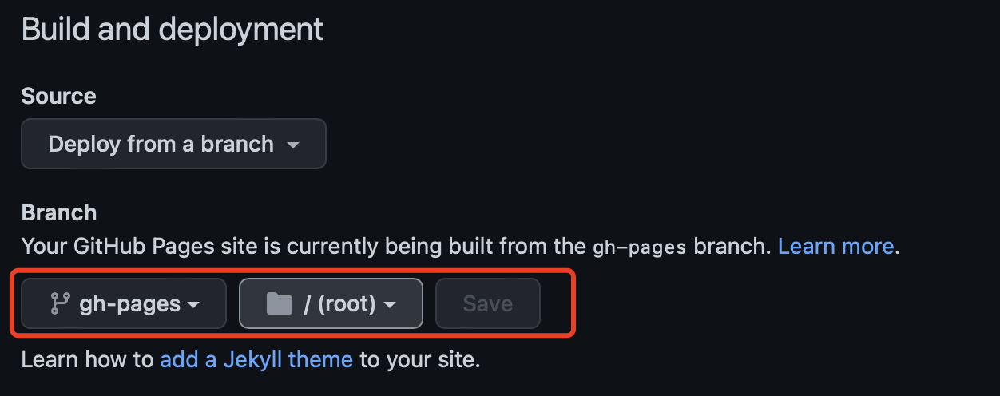
优先队列简介
什么是优先队列
优先队列（priority queue）是计算机科学中的一类抽象数据类型(Abstract Data Type)。优先队列中的每个元素都有各自的优先级，优先级最高的元素最先得到服务；优先级相同的元素按照其在优先队列中的顺序得到服务。优先队列通常使用"二叉堆"（binary heap）实现。二叉堆能保证树中最大的元素处在堆顶，这与优先队列要求优先级最高的元素排在队首相似，因此可以使用二叉堆来实现优先队列。
支持的操作
优先队列一般至少需要支持下述操作：
- 插入元素（push），时间复杂度：。
- 取出元素（pop），时间复杂度：。
- 查看元素（peek），时间复杂度：
其它可选的操作：
- 检查优先级高的一批元素
- 清空优先队列
- 批插入一批元素
- 合并多个优先队列
- 调整一个元素的优先级
特性
优先队列的实现常选用二叉堆(Binary Heap)，在数据结构中，优先队列一般也是指堆。
堆的两个性质：
- 结构性：堆是一颗除底层外被完全填满的二叉树，底层的节点从左到右填入，这样的树叫做完全二叉树。
- 堆序性：由于我们想很快找出最小元，则最小元素应该在根上，任意节点都小于它的子节点，这就是小顶堆（Min-Heap）；如果是查找最大元，则最大元素应该在根上，任意节点都要大于它的子节点，这就是大顶堆(Max-Heap)。
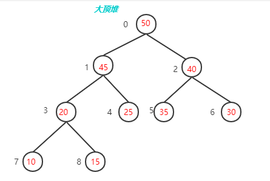
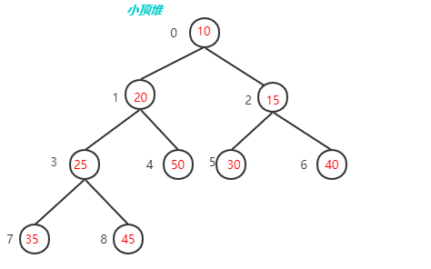
内存模型
二叉堆通常用数组来表示，因为一棵高度为 的完全二叉树有 到 个节点，这样存放一个二叉堆就不会太浪费空间（不需要额外的指针），而且一旦知道高度，就可以知道节点数的范围。
我们使用层序遍历的方式将二叉树的节点存储在数组中，由于二叉堆是完全二叉树，所以可以将树型结构映射到线性数组空间之中且不产生空间浪费，反而因为不需要存储指针元素节省了空间。
但这样又如何索引其父节点与子节点呢（根节点的 为0）？
假设一个节点 为 ，则其：
-
左子节点：
-
右子节点：
-
父节点：
这个数组从逻辑上说就是一个堆结构，我们用公式重新描述堆的定义：
-
大顶堆： &&
-
小顶堆： &&
数据结构
struct my_heap {
int *data; /* 元素存储地址 */
int size; /* 元素个数 */
int capacity; /* 容量 */
};
操作
下面以最大堆为例，使用图片简单介绍下它的基本操作，并附上C语言版的demo示例程序：
插入
最大堆的插入操作可以简单看成是“结点上浮”。当我们在向最大堆中插入一个结点我们必须满足完全二叉树的标准，那么被插入结点的位置的是固定的。而且要满足父结点关键字值不小于子结点关键字值，那么我们就需要去移动父结点和子结点的相互位置关系。如下图所示：
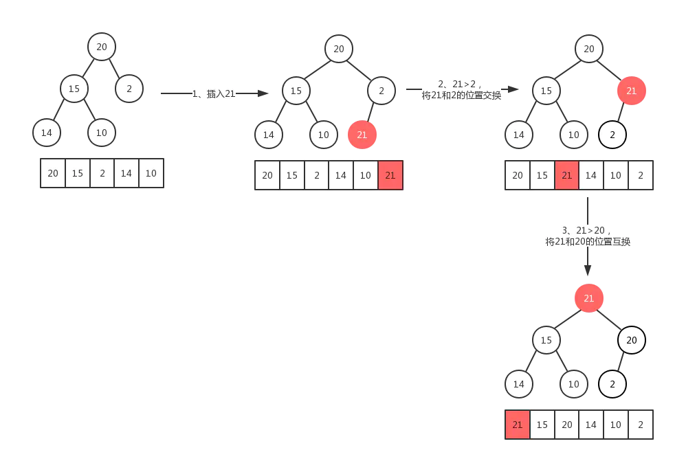
由于堆是一棵完全二叉树，存在 个元素，那么他的高度为：，这就说明代码中的for循环最多会执行 次。因此插入函数的时间复杂度为：。
void shift_up(struct my_heap *heap, int index) {
while (index > 0 && heap->data[index] > heap->data[(index - 1) / 2]) {
swap(heap->data[index], heap->data[(index - 1) / 2]);
index = (index - 1) / 2;
}
return;
}
bool push(struct my_heap *heap, int val) {
if (heap->size == heap->capacity) {
return false;
}
heap->data[heap->size] = val;
heap->size++;
shift_up(heap, heap->size - 1);
return true;
}
删除
最大堆的删除操作，总是从堆的根结点删除元素。同样根元素被删除之后为了能够保证该树还是一个完全二叉树，我们需要来移动完全二叉树的最后一个结点，让其继续符合完全二叉树的定义，从这里可以看作是最大堆最后一个结点的下沉操作。如图：
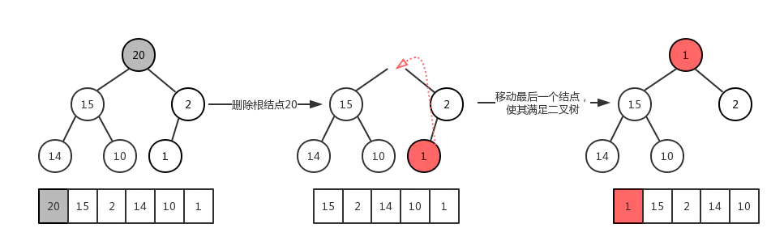
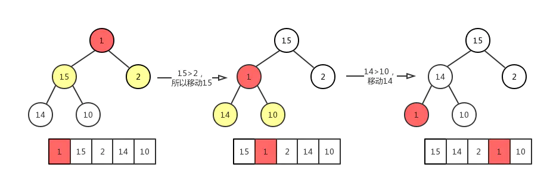
同最大堆的插入操作类似，同样包含 个元素的最大堆，其高度为：，其时间复杂度为：。
void shift_down(struct my_heap *heap, int index) {
int largest = index;
int left = 2 * index + 1;
int right = 2 * index + 2;
if (left < heap->size && heap->data[left] > heap->data[largest]) {
largest = left;
}
if (right < heap->size && heap->data[right] > heap->data[largest]) {
largest = right;
}
if (largest != index) {
swap(heap->data[index], heap->data[largest]);
shift_down(heap, largest);
}
}
bool pop(struct my_heap *heap, int *val) {
if (heap->size == 0) {
return false;
}
*val = heap->data[0];
heap->data[0] = heap->data[heap->size - 1];
heap->size--;
shift_down(heap, 0);
return true;
}
查找
查找就很简单了，因为是优先队列，考虑的是如何快速获取最优先的元素，而二叉堆中，最大/最小元素总是会自动调节到根的位置，所以我们只需要访问根元素即可。
bool peek(struct my_heap *heap, int *val) {
if (heap->size > 0) {
*val = heap->data[0];
return true;
}
return false;
}
创建
为什么要把最大堆的创建放在最后来讲？因为在堆的创建过程中，有两个方法。会分别用到最大堆的插入和最大堆的删除原理（上浮与下沉）：
- 先创建一个空堆，然后根据元素一个一个去插入结点。由于插入操作的时间复杂度为，那么 个元素插入进去，总的时间复杂度为 。
- 由于二叉堆以数组形式表 个元素的一个完全二叉树，我们直接调整各个结点的位置来满足最大堆的特性即可，这个过程也叫堆化（Heapify），总的时间复杂度为 。
思考：为什么堆化的时间复杂度是 呢？
现在我们通过堆化的方式直接从数组创建一个最大堆，假设数组为[79,66,43,83,30,87,38,55,91,72,49,9]，其对应的完全二叉树如下图所示：
但是这明显不符合最大堆的定义，所以我们需要让该完全二叉树转换成最大堆！怎么转换成一个最大堆呢？ 最大堆有一个特点就是其各个子树都是一个最大堆，那么我们就可以从把最小子树转换成一个最大堆，然后依次转换它的父节点对应的子树，直到最后的根节点所在的整个完全二叉树变成最大堆。
从最后一个非叶子结点开始从下往上调整，然后依次去找倒数第二个，倒数第三个非叶子节点…
最后一个非叶子节点其实就是最后一个叶子节点的父节点：如果元素个数为 ，则最后一个非叶子节点的index为。
这个调整过程，我们会使用到节点删除操作中的下沉动作。过程如下图：
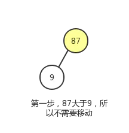
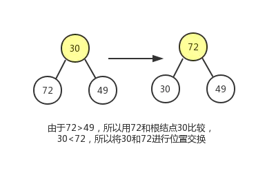
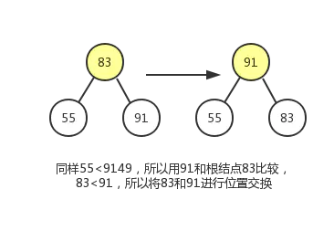
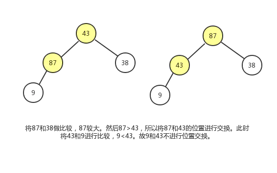
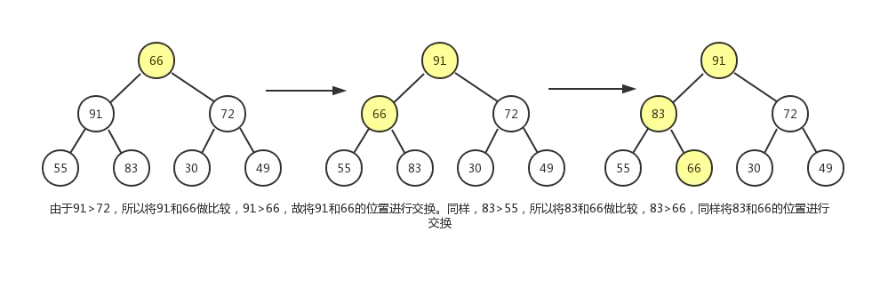
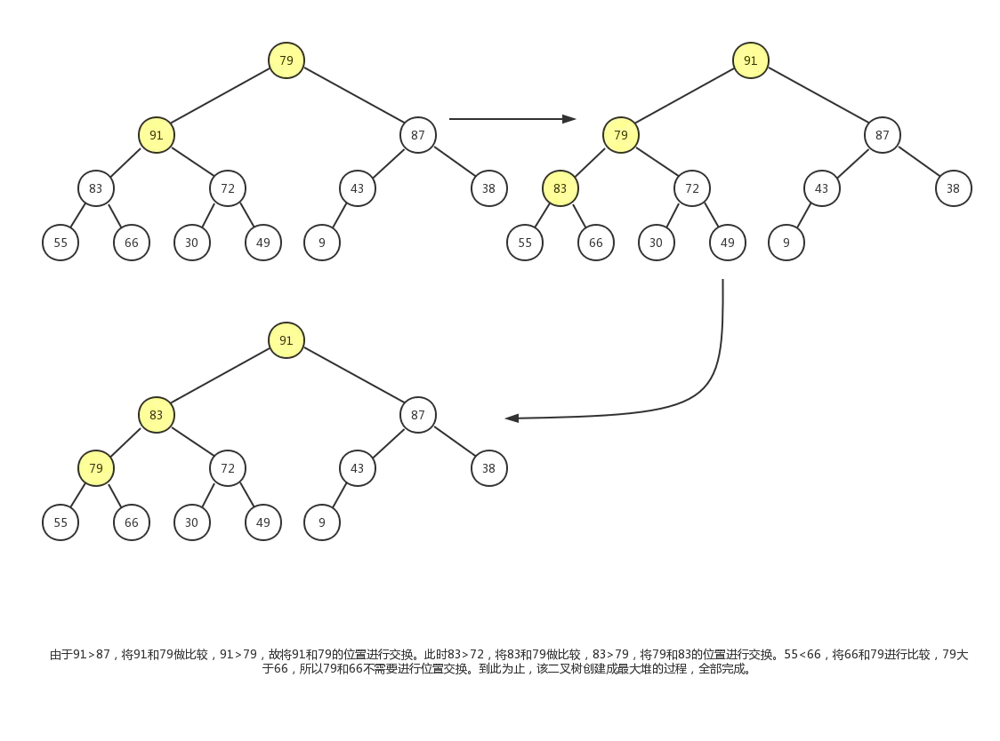
最终结果如下：
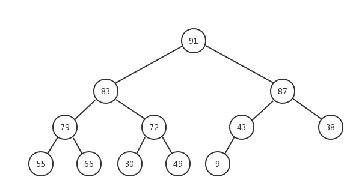
void heapify(struct my_heap *heap) {
for (int i = heap->size / 2 - 1; i >= 0; i--) {
shift_down(heap, i);
}
return;
}
堆排序
堆排序底层使用的也是二叉堆，在之前基础上扩展下，看看堆排序是如何做的。
-
升序 --> 使用大顶堆
-
降序 --> 使用小顶堆
步骤：
-
先个元素的无序序列，构建成大顶堆
-
将根节点与最后一个元素交换位置
-
交换过后可能不再满足大顶堆的条件，将堆顶下沉，重新构建成大顶堆
-
重复第二步、第三步直到整个数组排序完成
我们使用如下数据为例，图解排序过程：
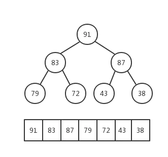
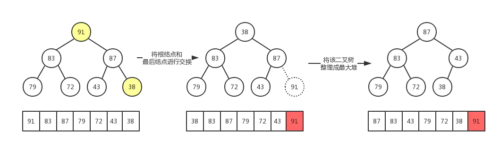
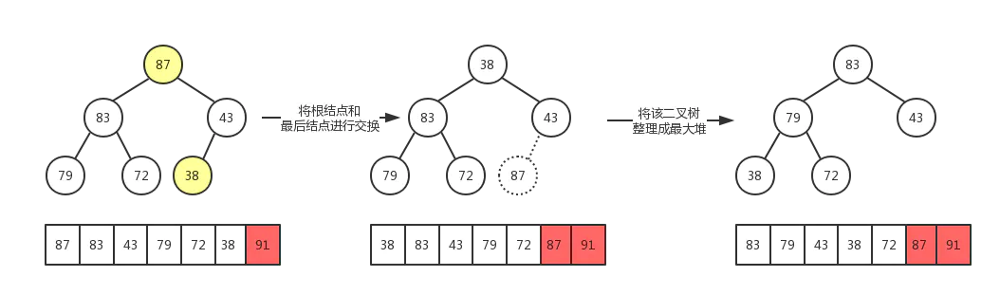
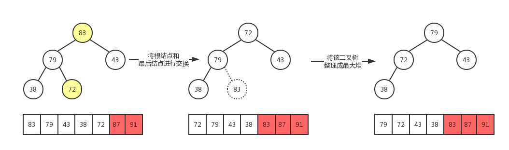
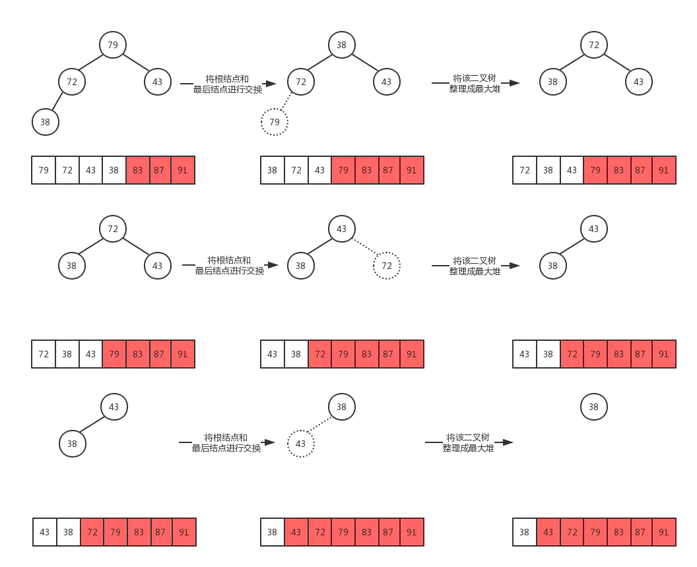
最后，数组被成功排序，示例demo：
void heap_sort(struct my_heap *heap) {
heapify(heap);
for (int i = heap->size - 1; i > 0; i--) {
swap(heap->data[i], heap->data[0]);
heap->size--;
shift_down(heap, 0);
}
}
堆排序是一种选择排序，整体主要由构建初始堆，交换堆顶元素和末尾元素并重建堆两部分组成。其中构建初始堆经推导复杂度为，在交换并重建堆的过程中，需交换次，而重建堆的过程中，根据完全二叉树的性质，逐步递减，近似为。所以堆排序时间复杂度一般认为就是。